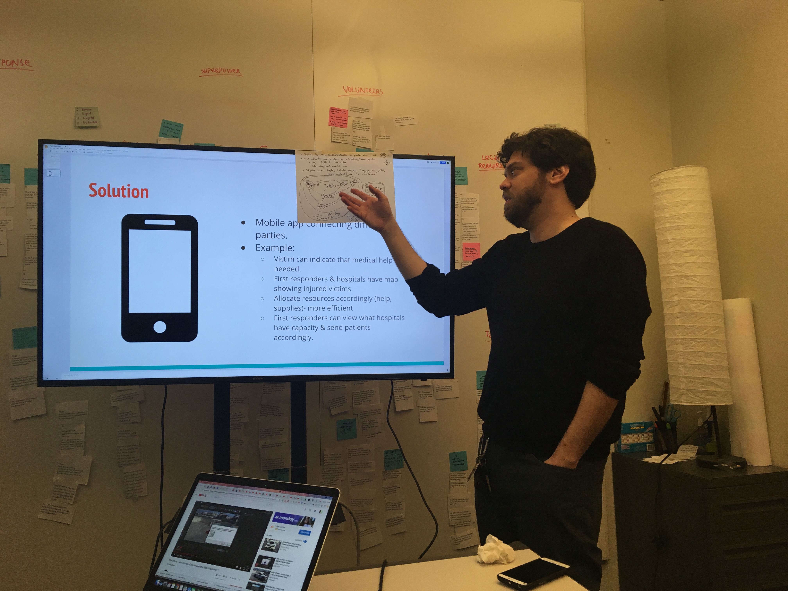

TeleTracking - Helping victims of disasters
Throughout man-made or natural disasters, hopistals face a surge of patients and non-patients alike, looking for medical care, shelter and protection. Seeking help at hospitals that are already overstrechted may cost the lives of injured victims. Citizens must therefore be directed to shelter locations capable of accomodating them. This way, hospitals would operate at more manageable capacities and with a focus on treating their patients. This project is currently being developed.
PROJECT BREAKDOWN
Scope
8 months
5 person team
Master's Capstone Project
My roles
UX Researcher
UX Designer
Skills
Affinity Diagrams
Interviewing
Design Sprints
Tools
Paper + Pencil
Product
This product is currently being developed. Our team has finished the inital research and discovery phase and is now ideating the first propototypes that will be shown to the client. A description follows of the team's progress up to the first design sprints to generate ideas.
Understanding the Problem Space
Project Kickoff
We met with TeleTracking to better understand the problem space. We asked them what their main goals for the project were, explained our design process and conducted a joint design activity with them: they were asked to create a TeleTracking persona, somebody that would impersonate the company's main values and goals.
Initial Research Methods
For the first two month work, the team decided to concentrate on guerilla research, secondary research and primary research.
Guerilla Research
By initially concentrating on ordinary citizens who had already been through a disaster, some of our key findings were:

When facing a disaster people might panic and not follow the procedures, even if they know them.
Supermarkets may be used as shelters since they could provide heat and electricity.
Disaster preparedness and knowledge often comes from school, movies and the news.
Surveys
We submitted a survey to MTurk hoping to obtain additional information on areas we still had a gap on secondary research data. The survey was answered by 98 people that had experienced disasters.
We found out that hospitals were still a fairly popular shelter location.

We wanted to understand the main reasons why people seek shelter at hospitals:

Interviews
We decided it was important to acquire more detailed information on some particular areas. In order to obtain it, we conducted interviews with:
- Disaster experts (Rubicon, Paragon, Red Cross...)
- Disaster survivors (from hurricane Sandy, hurricane Maria)
- Hospital workers
- Teletracking's clients
By interviewing staff from TeleTracking's client hospitals that had specifically asked for disaster solutions, various insights were gained:
- Hospitals must have the capability of tracking down non patient citizens within their facilities.
- If special need shelters are full, people tend to be sent to hospitals. Hospitals would then look after them, but they would not be considered as patients.
- Frequently, citizens don't take disasters seriously enough. Eventually, when they do realize they need shelter, hospitals might be the closest safe locations available.
Affinity Diagramming
In order to better understand all the information obtained from interviews, we set up an affinity diagram to cluster information.

Design Sprints
Pitching ideas
In order to start generating solutions for our problem space, every team member had to create a solution and pitch it to the team, using the previous research as a base to justify the suitability of the proposed idea.

Stakeholder model and Crazy 8s activity
In order to generate more ideas in a faster and more creative way, we first used our stakeholder model to identify pain points between the entities and the values exchanged by them.
After that, we each generated 8 ideas in 8 minutes, which forced us to be creative and think out of the box. We then grouped these ideas into clusters.

Next Steps
We are currently in the process of meeting with TeleTracking to discuss with them our most promising ideas and obtain feedback. For the next step we will narrow down the ideas even more and pick one to start developing low-fidelity wireframes.